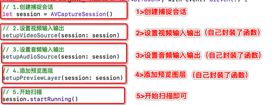
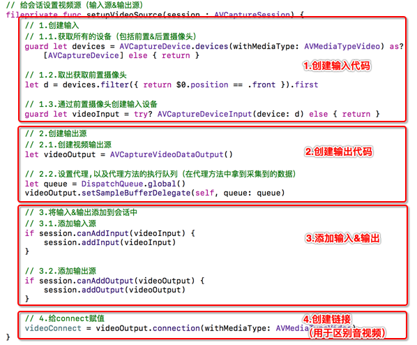
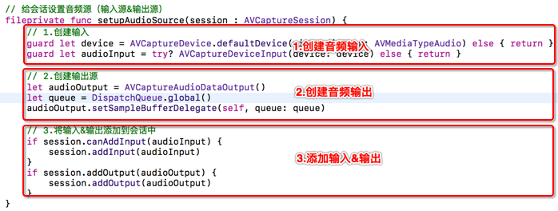
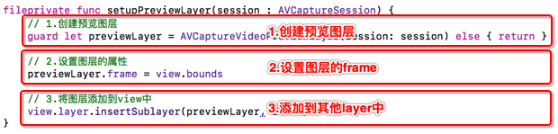
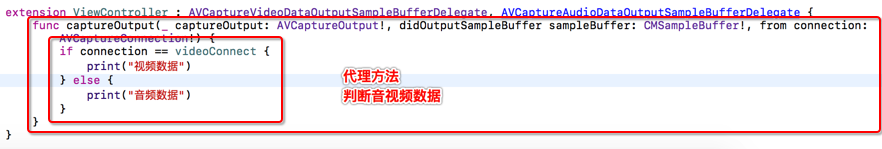
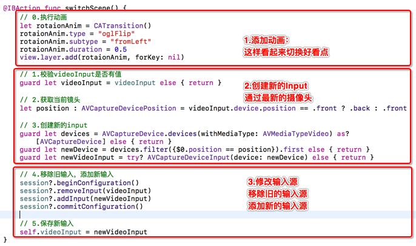

整体代码步骤
函数一（设置视频输入输出）
函数二（设置音频输入输出）
添加预览图层
遵守协议，实现代理方法
// 1.创建捕捉会话
let session = AVCaptureSession()
// 2.设置视频输入输出
setupVideoSource(session: session)
// 3.设置音频输入输出
setupAudioSource(session: session)
// 4.添加预览图层
setupPreviewLayer(session: session)
// 5.开始扫描
session.startRunning()
// 给会话设置视频源（输入源&输出源）
fileprivate func setupVideoSource(session : AVCaptureSession) {
// 1.创建输入
// 1.1.获取所有的设备（包括前置&后置摄像头）
guard let devices = AVCaptureDevice.devices(withMediaType: AVMediaTypeVideo) as? [AVCaptureDevice] else { return }
// 1.2.取出获取前置摄像头
let d = devices.filter({ return $0.position == .front }).first
// 1.3.通过前置摄像头创建输入设备
guard let videoInput = try? AVCaptureDeviceInput(device: d) else { return }
// 2.创建输出源
// 2.1.创建视频输出源
let videoOutput = AVCaptureVideoDataOutput()
// 2.2.设置代理,以及代理方法的执行队列（在代理方法中拿到采集到的数据）
let queue = DispatchQueue.global()
videoOutput.setSampleBufferDelegate(self, queue: queue)
// 3.将输入&输出添加到会话中
// 3.1.添加输入源
if session.canAddInput(videoInput) {
session.addInput(videoInput)
}
// 3.2.添加输出源
if session.canAddOutput(videoOutput) {
session.addOutput(videoOutput)
}
// 4.给connect赋值
videoConnect = videoOutput.connection(withMediaType: AVMediaTypeVideo)
}
// 给会话设置音频源（输入源&输出源）
fileprivate func setupAudioSource(session : AVCaptureSession) {
// 1.创建输入
guard let device = AVCaptureDevice.defaultDevice(withMediaType: AVMediaTypeAudio) else { return }
guard let audioInput = try? AVCaptureDeviceInput(device: device) else { return }
// 2.创建输出源
let audioOutput = AVCaptureAudioDataOutput()
let queue = DispatchQueue.global()
audioOutput.setSampleBufferDelegate(self, queue: queue)
// 3.将输入&输出添加到会话中
if session.canAddInput(audioInput) {
session.addInput(audioInput)
}
if session.canAddOutput(audioOutput) {
session.addOutput(audioOutput)
}
}
// 添加预览图层
fileprivate func setupPreviewLayer(session : AVCaptureSession) {
// 1.创建预览图层
guard let previewLayer = AVCaptureVideoPreviewLayer(session: session) else { return }
// 2.设置图层的属性
previewLayer.frame = view.bounds
// 3.将图层添加到view中
view.layer.insertSublayer(previewLayer, at: 0)
}
extension ViewController : AVCaptureVideoDataOutputSampleBufferDelegate, AVCaptureAudioDataOutputSampleBufferDelegate {
func captureOutput(_ captureOutput: AVCaptureOutput!, didOutputSampleBuffer sampleBuffer: CMSampleBuffer!, from connection: AVCaptureConnection!) {
if connection == videoConnect {
print("视频数据")
} else {
print("音频数据")
}
}
}
@IBAction func stopScanning() {
// 1.移除图层
previewLayer?.removeFromSuperlayer()
// 2.停止扫描
session?.stopRunning()
// 3.将对象重置为nil
session = nil
}
切换步骤
图例解析：
@IBAction func switchScene() {
// 0.执行动画
let rotaionAnim = CATransition()
rotaionAnim.type = "oglFlip"
rotaionAnim.subtype = "fromLeft"
rotaionAnim.duration = 0.5
view.layer.add(rotaionAnim, forKey: nil)
// 1.校验videoInput是否有值
guard let videoInput = videoInput else { return }
// 2.获取当前镜头
let position : AVCaptureDevicePosition = videoInput.device.position == .front ? .back : .front
// 3.创建新的input
guard let devices = AVCaptureDevice.devices(withMediaType: AVMediaTypeVideo) as? [AVCaptureDevice] else { return }
guard let newDevice = devices.filter({$0.position == position}).first else { return }
guard let newVideoInput = try? AVCaptureDeviceInput(device: newDevice) else { return }
// 4.移除旧输入，添加新输入
session?.beginConfiguration()
session?.removeInput(videoInput)
session?.addInput(newVideoInput)
session?.commitConfiguration()
// 5.保存新输入
self.videoInput = newVideoInput
}
// 添加文件输出
let movieFileoutput = AVCaptureMovieFileOutput()
self.movieFileOutput = movieFileoutput
session.addOutput(movieFileoutput)
// 获取视频的connection
let connection = movieFileoutput.connection(withMediaType: AVMediaTypeVideo)
// 设置视频的稳定模式
connection?.preferredVideoStabilizationMode = .auto
// 开始写入视频
movieFileoutput.startRecording(toOutputFileURL: outputFileURL, recordingDelegate: self)
// 0.停止写入
self.movieFileOutput?.stopRecording()
extension ViewController : AVCaptureFileOutputRecordingDelegate {
func capture(_ captureOutput: AVCaptureFileOutput!, didStartRecordingToOutputFileAt fileURL: URL!, fromConnections connections: [Any]!) {
print("开始录制")
}
func capture(_ captureOutput: AVCaptureFileOutput!, didFinishRecordingToOutputFileAt outputFileURL: URL!, fromConnections connections: [Any]!, error: Error!) {
print("停止录制")
}
}